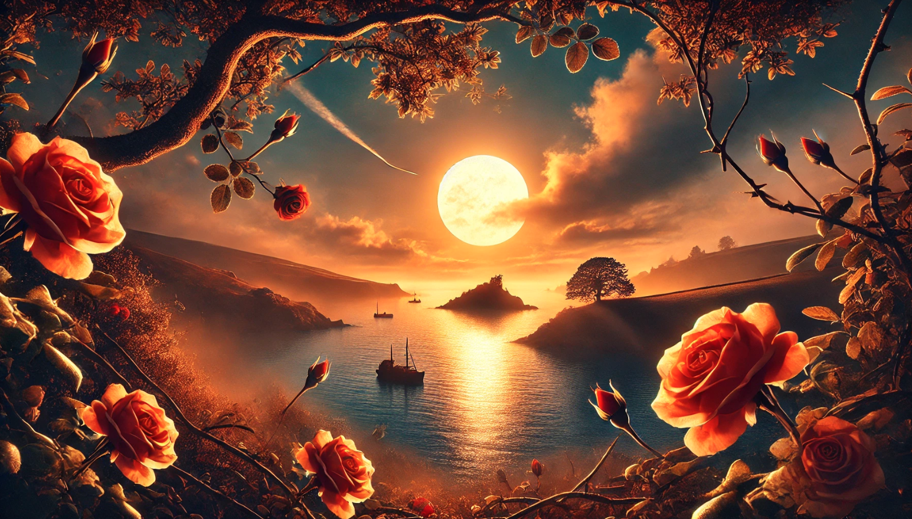

by Shaniah, Suzanne and Sunghyun


- 6 foot deep muddy water
- The only thing standing between freedom and the American dream
- If only Lena could swim [drowning]
- Cesar looks up to the sky and clutches his rosary before he plunges in
- 30 foot tall wall stretching across the horizon
- The only thing standing between Zilan and the gangs after him [bullet wounds]
- He looks down at his bloody leg, shot at by a cholo
- He promised mama he'd make it, he's got to do it
- 6 foot tall grass, a turned over safari jeep [crash]
- The only thing covering 50 migrants crawling on all fours from being spotted by the gangs nearby
- Nida raises her head, mud on her face, to make sure her daughter on her back is doing okay
- Eulich, is in his sixties, he doesn't think he can make it much longer [disease]
- 6 capsules of antibiotics and plan B
- The only thing that kept 13 year old Marina from getting pregnant after being raped by men on the journey
- The volunteer doctor takes them from her clenched arms covered in soot at the migrant camp [fire]
- she cries as she thinks about her teen daughter at home [loss]
- 6 foot barbed wired fence
- The only thing that stands against the Hernandez family and a better life
- Muddy hands dig….dig desperately beneath the fence
- Muddy bodies crawl and claw under, crawl toward freedom
Deaths & Missing by Year
Causes of Death
Music icons created by Freepik - Flaticon